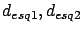
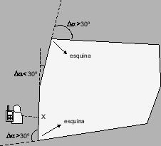
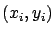
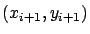
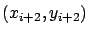
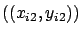
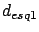
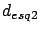

Siguiente: Consideración del factor de
Subir: Algoritmos y cálculos implementados
Anterior: Ancho de la calle
Índice General
El modelo de propagación para entornos urbanos de pequeñas
microceldas (MOPEM) incorpora en el cálculo de atenuación la
distancia desde el móvil a las esquinas (
) como
fue detallado en la sección 5.3.3. Por esta razón, se
desarrolló un algoritmo que dada la ubicación del móvil, la
ubicación de la radiobase y el trazado de manzanas, devuelve las
distancias a las dos esquinas de la cuadra más próxima al móvil.
Para lograr esto, se toman las mismas hipótesis que para el
cálculo de orientación: se descartan las posiciones del móvil que
se hallan dentro de la superficie de la manzana y se consideran
para el cálculo únicamente las manzanas próximas al móvil
(resultantes de la intersección con un círculo de centro en el
móvil y radio fijo).
Al igual que para el algoritmo de cálculo de orientación se procede
a continuación a encontrar la cuadra más próxima dentro de todas las
manzanas cercanas pero además interesa ahora la manzana que contiene
dicha cuadra. Una vez obtenida la cuadra más cercana, se mide la
distancia del móvil a la misma y se halla el punto más cercano
perteneciente a la cuadra ( ).
Teniendo en cuenta que al ser una cuadra un segmento de recta es
posible obtener las coordenadas de sus extremos, resultaría lógico
pensar que restaría medir la distancia de a los dos extremos de
la cuadra más cercana para culminar con el algoritmo. Sin embargo,
este procedimiento llevaría a resultados erróneos ya que como se
describió en la sección 8.1.5, cada manzana es
representada por un polígono con un número arbitrario de vértices y
no siempre éstos se corresponden con esquinas de la misma. Por lo
tanto, se optó por considerar una esquina a aquel punto
perteneciente a dos cuadras adyacentes que conforman un ángulo mayor
a 30^&cir#circ; entre sí (ver figura 10.5).
).
Teniendo en cuenta que al ser una cuadra un segmento de recta es
posible obtener las coordenadas de sus extremos, resultaría lógico
pensar que restaría medir la distancia de a los dos extremos de
la cuadra más cercana para culminar con el algoritmo. Sin embargo,
este procedimiento llevaría a resultados erróneos ya que como se
describió en la sección 8.1.5, cada manzana es
representada por un polígono con un número arbitrario de vértices y
no siempre éstos se corresponden con esquinas de la misma. Por lo
tanto, se optó por considerar una esquina a aquel punto
perteneciente a dos cuadras adyacentes que conforman un ángulo mayor
a 30^&cir#circ; entre sí (ver figura 10.5).
Figura 10.5:
Determinación de las esquinas de una manzana
|

|
Es así que para obtener las esquinas más próximas al móvil, se
partió de la cuadra más cercana ya obtenida y se fue calculando el
ángulo entre cada cuadra y la siguiente hasta que este resultara
mayor a 30^&cir#circ;. A continuación se describe el cálculo del ángulo
entre dos cuadras consecutivas:
donde
 y
 son las coordenadas de la
primera cuadra,
y
 las
coordenadas de la siguiente y
el ángulo entre
ambas. Cuando
resulte mayor a 30^&cir#circ; se detendrá la
iteración y la esquina estará dada por
. Cabe destacar
que esta misma iteración se reitera luego en el otro sentido para
encontrar la segunda esquina más próxima al móvil
.
Una vez obtenidas las esquinas resta calcular la distancia entre
y
y entre y
( y
).
Siguiente: Consideración del factor de
Subir: Algoritmos y cálculos implementados
Anterior: Ancho de la calle
Índice General
SAPO